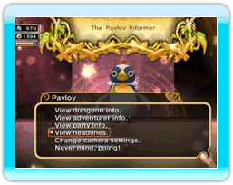
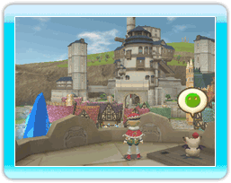

24
|
Weitere Einrichtungen |
 |
Es git eine Vielzahl weiterer Einrichungen, die das Regieren des Reiches erleichtern.
● Pavlov  Dieser unflätige Pinguin, der dem König auf dem Fuße folgt, ermöglicht es, mehr über Einsatzorte, Abenteurerprofile, Neuigkeiten zu besonderen Ereignissen und weitere nützliche Informationen zu erfahren. Pavlov ermöglicht es in seinem Menü außerdem, die Kameraeinstellungen zu verändern. ● Chimes Taverne  In dieser Einrichtung kann eine eigene Abenteurertruppe zusammengestellt werden. Der Fortschritt der Abenteurertruppe kann in Echtzeit verfolgt werden. ● Mogioshs Aussichtsturm  Mogiosh kann am Eingang des Aussichtsturms angesprochen werden, um von der Turmspitze aus das Reich besser überblicken zu können. Mogiosh besitzt außerdem nützliche Informationen zu Gebäuden und anderen wichtigen Themen des Reiches. Wann immer du Hilfe benötigst, solltest du zu ihm gehen. |
 |
 |
 |